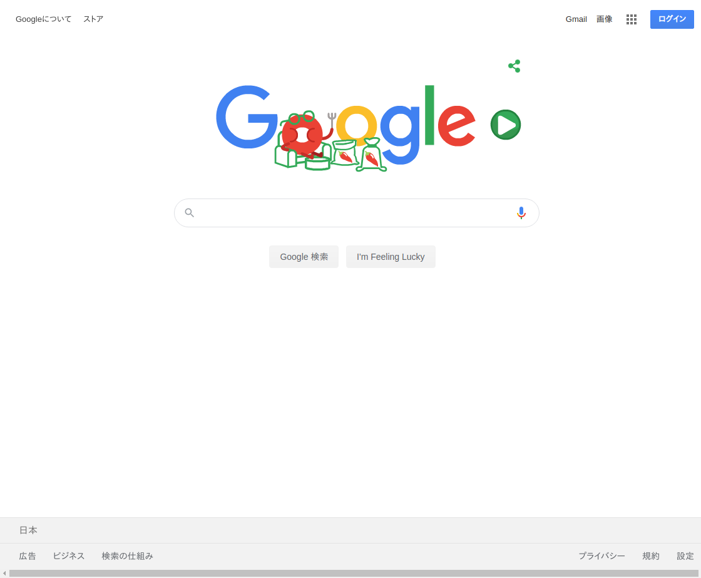

2. テンプレート画面名¶
画面ID |
9999 |
|---|---|
画面概要 |
この画面はテンプレートです |
公開範囲 |
認証必須 or オープンなど |
2.1. リクエスト¶
2.1.1. ヘッダー¶
method |
POST |
|---|---|
path |
/pages/template/${id} |
token |
${token} |
content-type |
application/x-www-form-urlencoded |
2.1.2. パラメータ類¶
id |
ユーザーID |
|---|
search |
検索ワード |
|---|---|
page |
ページ数 |
answer |
1/2/3/4 |
|---|
token |
cookeに保存されたログイントークン |
|---|
2.1.3. メタ情報¶
タイトル |
テンプレート画面タイトル |
|---|---|
キーワード |
sphinx, document, template |
ディスクリプション |
sphinxを使ったドキュメントテンプレートです。 |
2.1.4. GA設定タグ¶
<script> (function(i,s,o,g,r,a,m){-- 中略; </script></head>
2.2. 画面¶
|  |
caseA_before |
caseA_after |
caseB_before |
caseB_After |
No |
名前 |
種類 |
イベント |
動的要素 |
|---|---|---|---|---|
1 |
ログインボタン |
button |
画面表示 / クリック |
非ログイン時のみ出現 |
2 |
ユーザー名 |
text |
画面表示 / クリック |
ログイン時のみ出現
ユーザー名を表示
|
3 |
Googleについて |
text |
クリック |
- |
4 |
検索 |
form |
- |
- |
5 |
Google検索 |
button |
クリック |
- |
6 |
セレクト |
form |
- |
検索に文字入力をすると表示 |
7 |
セレクト2 |
form |
- |
セレクト1を選択している間のみ追加 |
注釈
種類は area / text / image / button(submitも含める) / form のいずれかとする
hrefによる遷移もクリックイベントとして扱う
2.4. イベント発火¶
2.5. 連携機能¶
XXX レコメンドエンジン |
連携内容の説明 |
YYY API |
連携内容の説明 |